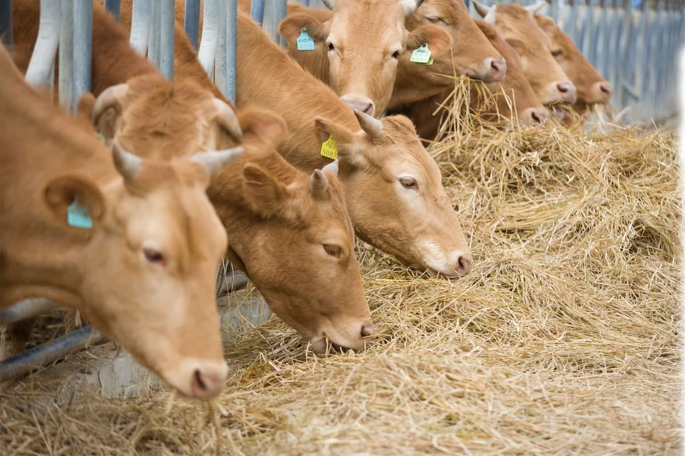
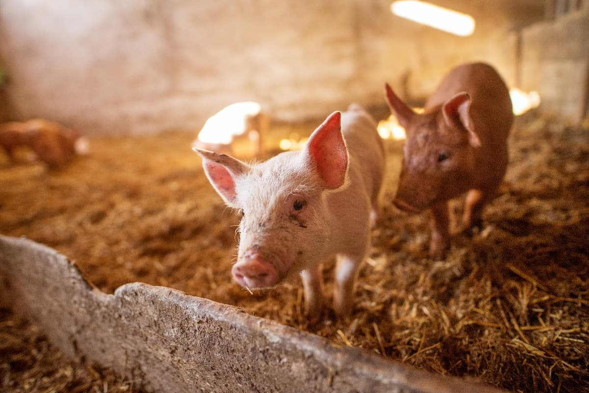
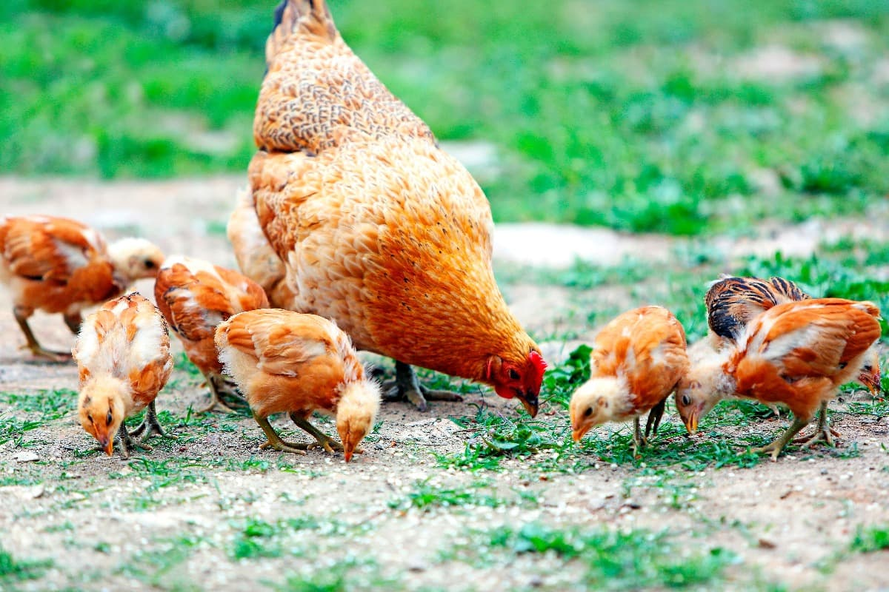
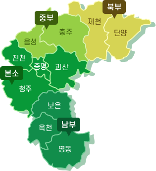
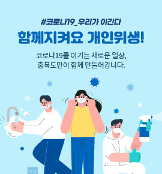

어린이 도청
청년포털
일자리포털
문화관광
여성·복지
일자리상황판
로그인
회원가입
대표 바로가기
충청북도 로고 이미지
동물위생시험소
메뉴 열기
충청북도청 바로가기
로그인
검색
메뉴
시험소 소개
인사말
연혁 및 기능
조직도
담당자 및 업무
관할구역안내
시설 및 장비
찾아오시는 길
동물방역
재난성 가축전염병 방역
소 질병 방역
돼지 질병 방역
조류 질병 방역
기타 동물 방역
병성감정 및 혈청검사
가축방역사업 결과
축산물검사
축산물위생검사
축산물안전성검사
축산물위생검사자료
축산물검사결과자료
도축검사피드백서비스
축산시험
가축개량
토종가축품종보존
유전공학
축산기술보급
초지관리
축산시험관련자료
지소정보
중부지소
남부지소
북부지소
음성축산물검사소
질병정보
소 질병
돼지 질병
닭 질병
기타 질병
정보마당
공지사항
정보공개
뉴스 및 보도자료
관련법규
관련사이트
민원안내
검사의뢰서식
검사의뢰방법
축산물검사안내
민원담당부서
주요상담Q/A
로그인
검색
사이트맵
메뉴 닫기
충북축산
01
02
03
04
비주얼 프로그레스바
재생



충북축산
의
밝은미래
를
만들어갑니다.
가축질병을 근절하여 축산농가의 경제적 피해를 최소화하고,
안전하고 위생적인 축산물 공급으로 소비자를 보호하기 위해 노력합니다.
축산물 검사
도축 검사 피드백
축산물 가공품검사
유방염 검사
미생물 교육 신청
INFORMATION
관할 본(지)소 안내
북부지소
중부지소
남부지소
본소
음성축산물검사소

공지, 뉴스 및 보도자료
공지사항
뉴스 및 보도자료
2022.06.20
충청북도 동물위생시험소 중부지소 기간제근로자 채용 공고
2022.06.10
충청북도동물위생시험소 (축산시험장) 기간제근로자 채용 공고
2022.05.17
충청북도동물위생시험소 남부지소 기간제근로자 채용 공고
2022.05.17
뉴스 및 보도자료
2022.05.17
뉴스 및 보도자료
2022.05.17
뉴스 및 보도자료
자세히보기
자세히보기
알림존

이전
정지
다음
바로가기
민원안내
관련법규
찾아오시는 길
축산물 시세정보
축산물의 도·소매 시세 정보를 알려드립니다.
소고기 이력제
지역별, 월령별 현황을 보실 수 있습니다.